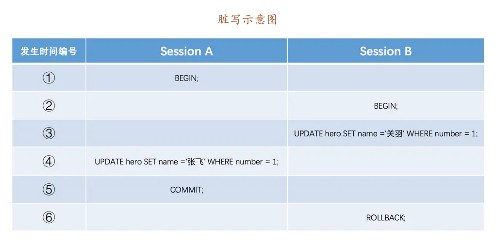

事务隔离级别和MVCC
标签： MySQL是怎样运行的
事前准备
为了故事的顺利发展，我们需要创建一个表：
CREATE TABLE hero (
number INT,
name VARCHAR(100),
country varchar(100),
PRIMARY KEY (number)
) Engine=InnoDB CHARSET=utf8;
小贴士： 注意我们把这个hero表的主键命名为number，而不是id，主要是想和后边要用到的事务id做区别，大家不用大惊小怪哈～
然后向这个表里插入一条数据：
INSERT INTO hero VALUES(1, '刘备', '蜀');
现在表里的数据就是这样的：
mysql> SELECT * FROM hero;
+--------+--------+---------+
| number | name | country |
+--------+--------+---------+
| 1 | 刘备 | 蜀 |
+--------+--------+---------+
1 row in set (0.00 sec)
事务隔离级别
我们知道MySQL是一个客户端／服务器架构的软件，对于同一个服务器来说，可以有若干个客户端与之连接，每个客户端与服务器连接上之后，就可以称之为一个会话（Session）。每个客户端都可以在自己的会话中向服务器发出请求语句，一个请求语句可能是某个事务的一部分，也就是对于服务器来说可能同时处理多个事务。在事务简介的章节中我们说过事务有一个称之为隔离性的特性，理论上在某个事务对某个数据进行访问时，其他事务应该进行排队，当该事务提交之后，其他事务才可以继续访问这个数据。但是这样子的话对性能影响太大，我们既想保持事务的隔离性，又想让服务器在处理访问同一数据的多个事务时性能尽量高些，鱼和熊掌不可得兼，舍一部分隔离性而取性能者也。
事务并发执行遇到的问题
怎么个舍弃法呢？我们先得看一下访问相同数据的事务在不保证串行执行（也就是执行完一个再执行另一个）的情况下可能会出现哪些问题：
-
脏写（
Dirty Write）如果一个事务修改了另一个未提交事务修改过的数据，那就意味着发生了
脏写，示意图如下：如上图，
Session A和Session B各开启了一个事务，Session B中的事务先将number列为1的记录的name列更新为'关羽'，然后Session A中的事务接着又把这条number列为1的记录的name列更新为张飞。如果之后Session B中的事务进行了回滚，那么Session A中的更新也将不复存在，这种现象就称之为脏写。这时Session A中的事务就很懵逼，我明明把数据更新了，最后也提交事务了，怎么到最后说自己啥也没干呢？ -
脏读（
Dirty Read）如果一个事务读到了另一个未提交事务修改过的数据，那就意味着发生了
脏读，示意图如下：如上图，
Session A和Session B各开启了一个事务，Session B中的事务先将number列为1的记录的name列更新为'关羽'，然后Session A中的事务再去查询这条number为1的记录，如果读到列name的值为'关羽'，而Session B中的事务稍后进行了回滚，那么Session A中的事务相当于读到了一个不存在的数据，这种现象就称之为脏读。 -
不可重复读（Non-Repeatable Read）
如果一个事务只能读到另一个已经提交的事务修改过的数据，并且其他事务每对该数据进行一次修改并提交后，该事务都能查询得到最新值，那就意味着发生了
不可重复读，示意图如下：如上图，我们在
Session B中提交了几个隐式事务（注意是隐式事务，意味着语句结束事务就提交了），这些事务都修改了number列为1的记录的列name的值，每次事务提交之后，如果Session A中的事务都可以查看到最新的值，这种现象也被称之为不可重复读。 -
幻读（Phantom）
如果一个事务先根据某些条件查询出一些记录，之后另一个事务又向表中插入了符合这些条件的记录，原先的事务再次按照该条件查询时，能把另一个事务插入的记录也读出来，那就意味着发生了
幻读，示意图如下：如上图，
Session A中的事务先根据条件number > 0这个条件查询表hero，得到了name列值为'刘备'的记录；之后Session B中提交了一个隐式事务，该事务向表hero中插入了一条新记录；之后Session A中的事务再根据相同的条件number > 0查询表hero，得到的结果集中包含Session B中的事务新插入的那条记录，这种现象也被称之为幻读。有的同学会有疑问，那如果
Session B中是删除了一些符合number > 0的记录而不是插入新记录，那Session A中之后再根据number > 0的条件读取的记录变少了，这种现象算不算幻读呢？明确说一下，这种现象不属于幻读，幻读强调的是一个事务按照某个相同条件多次读取记录时，后读取时读到了之前没有读到的记录。小贴士： 那对于先前已经读到的记录，之后又读取不到这种情况，算啥呢？其实这相当于对每一条记录都发生了不可重复读的现象。幻读只是重点强调了读取到了之前读取没有获取到的记录。
SQL标准中的四种隔离级别
我们上边介绍了几种并发事务执行过程中可能遇到的一些问题，这些问题也有轻重缓急之分，我们给这些问题按照严重性来排一下序：
脏写 > 脏读 > 不可重复读 > 幻读
我们上边所说的舍弃一部分隔离性来换取一部分性能在这里就体现在：设立一些隔离级别，隔离级别越低，越严重的问题就越可能发生。有一帮人（并不是设计MySQL的大叔们）制定了一个所谓的SQL标准，在标准中设立了4个隔离级别：
-
READ UNCOMMITTED：未提交读。 -
READ COMMITTED：已提交读。 -
REPEATABLE READ：可重复读。 -
SERIALIZABLE：可串行化。
SQL标准中规定，针对不同的隔离级别，并发事务可以发生不同严重程度的问题，具体情况如下：
| 隔离级别 | 脏读 | 不可重复读 | 幻读 |
|---|---|---|---|
READ UNCOMMITTED |
Possible | Possible | Possible |
READ COMMITTED |
Not Possible | Possible | Possible |
REPEATABLE READ |
Not Possible | Not Possible | Possible |
SERIALIZABLE |
Not Possible | Not Possible | Not Possible |
也就是说：
-
READ UNCOMMITTED隔离级别下，可能发生脏读、不可重复读和幻读问题。 -
READ COMMITTED隔离级别下，可能发生不可重复读和幻读问题，但是不可以发生脏读问题。 -
REPEATABLE READ隔离级别下，可能发生幻读问题，但是不可以发生脏读和不可重复读的问题。 -
SERIALIZABLE隔离级别下，各种问题都不可以发生。
脏写是怎么回事儿？怎么里边都没写呢？这是因为脏写这个问题太严重了，不论是哪种隔离级别，都不允许脏写的情况发生。
MySQL中支持的四种隔离级别
不同的数据库厂商对SQL标准中规定的四种隔离级别支持不一样，比方说Oracle就只支持READ COMMITTED和SERIALIZABLE隔离级别。本书中所讨论的MySQL虽然支持4种隔离级别，但与SQL标准中所规定的各级隔离级别允许发生的问题却有些出入，MySQL在REPEATABLE READ隔离级别下，是可以禁止幻读问题的发生的（关于如何禁止我们之后会详细说明的）。
MySQL的默认隔离级别为REPEATABLE READ，我们可以手动修改一下事务的隔离级别。
如何设置事务的隔离级别
我们可以通过下边的语句修改事务的隔离级别：
SET [GLOBAL|SESSION] TRANSACTION ISOLATION LEVEL level;
其中的level可选值有4个：
level: {
REPEATABLE READ
| READ COMMITTED
| READ UNCOMMITTED
| SERIALIZABLE
}
设置事务的隔离级别的语句中，在SET关键字后可以放置GLOBAL关键字、SESSION关键字或者什么都不放，这样会对不同范围的事务产生不同的影响，具体如下：
-
使用
GLOBAL关键字（在全局范围影响）：比方说这样：
SET GLOBAL TRANSACTION ISOLATION LEVEL SERIALIZABLE;则：
-
只对执行完该语句之后产生的会话起作用。
-
当前已经存在的会话无效。
-
-
使用
SESSION关键字（在会话范围影响）：比方说这样：
SET SESSION TRANSACTION ISOLATION LEVEL SERIALIZABLE;则：
-
对当前会话的所有后续的事务有效
-
该语句可以在已经开启的事务中间执行，但不会影响当前正在执行的事务。
-
如果在事务之间执行，则对后续的事务有效。
-
-
上述两个关键字都不用（只对执行语句后的下一个事务产生影响）：
比方说这样：
SET TRANSACTION ISOLATION LEVEL SERIALIZABLE;则：
-
只对当前会话中下一个即将开启的事务有效。
-
下一个事务执行完后，后续事务将恢复到之前的隔离级别。
-
该语句不能在已经开启的事务中间执行，会报错的。
-
如果我们在服务器启动时想改变事务的默认隔离级别，可以修改启动参数transaction-isolation的值，比方说我们在启动服务器时指定了--transaction-isolation=SERIALIZABLE，那么事务的默认隔离级别就从原来的REPEATABLE READ变成了SERIALIZABLE。
想要查看当前会话默认的隔离级别可以通过查看系统变量transaction_isolation的值来确定：
mysql> SHOW VARIABLES LIKE 'transaction_isolation';
+-----------------------+-----------------+
| Variable_name | Value |
+-----------------------+-----------------+
| transaction_isolation | REPEATABLE-READ |
+-----------------------+-----------------+
1 row in set (0.02 sec)
或者使用更简便的写法：
mysql> SELECT @@transaction_isolation;
+-------------------------+
| @@transaction_isolation |
+-------------------------+
| REPEATABLE-READ |
+-------------------------+
1 row in set (0.00 sec)
小贴士： 我们也可以使用设置系统变量transaction_isolation的方式来设置事务的隔离级别，不过我们前边介绍过，一般系统变量只有GLOBAL和SESSION两个作用范围，而这个transaction_isolation却有3个（与上边 SET TRANSACTION ISOLATION LEVEL的语法相对应），设置语法上有些特殊，更多详情可以参见文档：https://dev.mysql.com/doc/refman/5.7/en/server-system-variables.html#sysvar_transaction_isolation。 另外，transaction_isolation是在MySQL 5.7.20的版本中引入来替换tx_isolation的，如果你使用的是之前版本的MySQL，请将上述用到系统变量transaction_isolation的地方替换为tx_isolation。
MVCC原理
版本链
我们前边说过，对于使用InnoDB存储引擎的表来说，它的聚簇索引记录中都包含两个必要的隐藏列（row_id并不是必要的，我们创建的表中有主键或者非NULL的UNIQUE键时都不会包含row_id列）：
-
trx_id：每次一个事务对某条聚簇索引记录进行改动时，都会把该事务的事务id赋值给trx_id隐藏列。 -
roll_pointer：每次对某条聚簇索引记录进行改动时，都会把旧的版本写入到undo日志中，然后这个隐藏列就相当于一个指针，可以通过它来找到该记录修改前的信息。
比方说我们的表hero现在只包含一条记录：
mysql> SELECT * FROM hero;
+--------+--------+---------+
| number | name | country |
+--------+--------+---------+
| 1 | 刘备 | 蜀 |
+--------+--------+---------+
1 row in set (0.07 sec)
假设插入该记录的事务id为80，那么此刻该条记录的示意图如下所示：
小贴士： 实际上insert undo只在事务回滚时起作用，当事务提交后，该类型的undo日志就没用了，它占用的Undo Log Segment也会被系统回收（也就是该undo日志占用的Undo页面链表要么被重用，要么被释放）。虽然真正的insert undo日志占用的存储空间被释放了，但是roll_pointer的值并不会被清除，roll_pointer属性占用7个字节，第一个比特位就标记着它指向的undo日志的类型，如果该比特位的值为1时，就代表着它指向的undo日志类型为insert undo。所以我们之后在画图时都会把insert undo给去掉，大家留意一下就好了。
假设之后两个事务id分别为100、200的事务对这条记录进行UPDATE操作，操作流程如下：
小贴士： 能不能在两个事务中交叉更新同一条记录呢？哈哈，这不就是一个事务修改了另一个未提交事务修改过的数据，沦为了脏写了么？InnoDB使用锁来保证不会有脏写情况的发生，也就是在第一个事务更新了某条记录后，就会给这条记录加锁，另一个事务再次更新时就需要等待第一个事务提交了，把锁释放之后才可以继续更新。关于锁的更多细节我们后续的文章中再唠叨哈～
每次对记录进行改动，都会记录一条undo日志，每条undo日志也都有一个roll_pointer属性（INSERT操作对应的undo日志没有该属性，因为该记录并没有更早的版本），可以将这些undo日志都连起来，串成一个链表，所以现在的情况就像下图一样：
对该记录每次更新后，都会将旧值放到一条undo日志中，就算是该记录的一个旧版本，随着更新次数的增多，所有的版本都会被roll_pointer属性连接成一个链表，我们把这个链表称之为版本链，版本链的头节点就是当前记录最新的值。另外，每个版本中还包含生成该版本时对应的事务id，这个信息很重要，我们稍后就会用到。
ReadView
对于使用READ UNCOMMITTED隔离级别的事务来说，由于可以读到未提交事务修改过的记录，所以直接读取记录的最新版本就好了；对于使用SERIALIZABLE隔离级别的事务来说，设计InnoDB的大叔规定使用加锁的方式来访问记录（加锁是啥我们后续文章中说哈）；对于使用READ COMMITTED和REPEATABLE READ隔离级别的事务来说，都必须保证读到已经提交了的事务修改过的记录，也就是说假如另一个事务已经修改了记录但是尚未提交，是不能直接读取最新版本的记录的，核心问题就是：需要判断一下版本链中的哪个版本是当前事务可见的。为此，设计InnoDB的大叔提出了一个ReadView的概念，这个ReadView中主要包含4个比较重要的内容：
-
m_ids：表示在生成ReadView时当前系统中活跃的读写事务的事务id列表。 -
min_trx_id：表示在生成ReadView时当前系统中活跃的读写事务中最小的事务id，也就是m_ids中的最小值。 -
max_trx_id：表示生成ReadView时系统中应该分配给下一个事务的id值。小贴士： 注意max_trx_id并不是m_ids中的最大值，事务id是递增分配的。比方说现在有id为1，2，3这三个事务，之后id为3的事务提交了。那么一个新的读事务在生成ReadView时，m_ids就包括1和2，min_trx_id的值就是1，max_trx_id的值就是4。
-
creator_trx_id：表示生成该ReadView的事务的事务id。小贴士： 我们前边说过，只有在对表中的记录做改动时（执行INSERT、DELETE、UPDATE这些语句时）才会为事务分配事务id，否则在一个只读事务中的事务id值都默认为0。
有了这个ReadView，这样在访问某条记录时，只需要按照下边的步骤判断记录的某个版本是否可见：
-
如果被访问版本的
trx_id属性值与ReadView中的creator_trx_id值相同，意味着当前事务在访问它自己修改过的记录，所以该版本可以被当前事务访问。 -
如果被访问版本的
trx_id属性值小于ReadView中的min_trx_id值，表明生成该版本的事务在当前事务生成ReadView前已经提交，所以该版本可以被当前事务访问。 -
如果被访问版本的
trx_id属性值大于或等于ReadView中的max_trx_id值，表明生成该版本的事务在当前事务生成ReadView后才开启，所以该版本不可以被当前事务访问。 -
如果被访问版本的
trx_id属性值在ReadView的min_trx_id和max_trx_id之间，那就需要判断一下trx_id属性值是不是在m_ids列表中，如果在，说明创建ReadView时生成该版本的事务还是活跃的，该版本不可以被访问；如果不在，说明创建ReadView时生成该版本的事务已经被提交，该版本可以被访问。
如果某个版本的数据对当前事务不可见的话，那就顺着版本链找到下一个版本的数据，继续按照上边的步骤判断可见性，依此类推，直到版本链中的最后一个版本。如果最后一个版本也不可见的话，那么就意味着该条记录对该事务完全不可见，查询结果就不包含该记录。
在MySQL中，READ COMMITTED和REPEATABLE READ隔离级别的的一个非常大的区别就是它们生成ReadView的时机不同。我们还是以表hero为例来，假设现在表hero中只有一条由事务id为80的事务插入的一条记录：
mysql> SELECT * FROM hero;
+--------+--------+---------+
| number | name | country |
+--------+--------+---------+
| 1 | 刘备 | 蜀 |
+--------+--------+---------+
1 row in set (0.07 sec)
接下来看一下READ COMMITTED和REPEATABLE READ所谓的生成ReadView的时机不同到底不同在哪里。
READ COMMITTED —— 每次读取数据前都生成一个ReadView
比方说现在系统里有两个事务id分别为100、200的事务在执行：
# Transaction 100
BEGIN;
UPDATE hero SET name = '关羽' WHERE number = 1;
UPDATE hero SET name = '张飞' WHERE number = 1;
# Transaction 200
BEGIN;
# 更新了一些别的表的记录
...
小贴士： 再次强调一遍，事务执行过程中，只有在第一次真正修改记录时（比如使用INSERT、DELETE、UPDATE语句），才会被分配一个单独的事务id，这个事务id是递增的。所以我们才在Transaction 200中更新一些别的表的记录，目的是让它分配事务id。
此刻，表hero中number为1的记录得到的版本链表如下所示：
假设现在有一个使用READ COMMITTED隔离级别的事务开始执行：
# 使用READ COMMITTED隔离级别的事务
BEGIN;
# SELECT1：Transaction 100、200未提交
SELECT * FROM hero WHERE number = 1; # 得到的列name的值为'刘备'
这个SELECT1的执行过程如下：
-
在执行
SELECT语句时会先生成一个ReadView，ReadView的m_ids列表的内容就是[100, 200]，min_trx_id为100，max_trx_id为201，creator_trx_id为0。 -
然后从版本链中挑选可见的记录，从图中可以看出，最新版本的列
name的内容是'张飞'，该版本的trx_id值为100，在m_ids列表内，所以不符合可见性要求，根据roll_pointer跳到下一个版本。 -
下一个版本的列
name的内容是'关羽'，该版本的trx_id值也为100，也在m_ids列表内，所以也不符合要求，继续跳到下一个版本。 -
下一个版本的列
name的内容是'刘备'，该版本的trx_id值为80，小于ReadView中的min_trx_id值100，所以这个版本是符合要求的，最后返回给用户的版本就是这条列name为'刘备'的记录。
之后，我们把事务id为100的事务提交一下，就像这样：
# Transaction 100
BEGIN;
UPDATE hero SET name = '关羽' WHERE number = 1;
UPDATE hero SET name = '张飞' WHERE number = 1;
COMMIT;
然后再到事务id为200的事务中更新一下表hero中number为1的记录：
# Transaction 200
BEGIN;
# 更新了一些别的表的记录
...
UPDATE hero SET name = '赵云' WHERE number = 1;
UPDATE hero SET name = '诸葛亮' WHERE number = 1;
此刻，表hero中number为1的记录的版本链就长这样：
然后再到刚才使用READ COMMITTED隔离级别的事务中继续查找这个number为1的记录，如下：
# 使用READ COMMITTED隔离级别的事务
BEGIN;
# SELECT1：Transaction 100、200均未提交
SELECT * FROM hero WHERE number = 1; # 得到的列name的值为'刘备'
# SELECT2：Transaction 100提交，Transaction 200未提交
SELECT * FROM hero WHERE number = 1; # 得到的列name的值为'张飞'
这个SELECT2的执行过程如下：
-
在执行
SELECT语句时会又会单独生成一个ReadView，该ReadView的m_ids列表的内容就是[200]（事务id为100的那个事务已经提交了，所以再次生成快照时就没有它了），min_trx_id为200，max_trx_id为201，creator_trx_id为0。 -
然后从版本链中挑选可见的记录，从图中可以看出，最新版本的列
name的内容是'诸葛亮'，该版本的trx_id值为200，在m_ids列表内，所以不符合可见性要求，根据roll_pointer跳到下一个版本。 -
下一个版本的列
name的内容是'赵云'，该版本的trx_id值为200，也在m_ids列表内，所以也不符合要求，继续跳到下一个版本。 -
下一个版本的列
name的内容是'张飞'，该版本的trx_id值为100，小于ReadView中的min_trx_id值200，所以这个版本是符合要求的，最后返回给用户的版本就是这条列name为'张飞'的记录。
以此类推，如果之后事务id为200的记录也提交了，再次在使用READ COMMITTED隔离级别的事务中查询表hero中number值为1的记录时，得到的结果就是'诸葛亮'了，具体流程我们就不分析了。总结一下就是：使用READ COMMITTED隔离级别的事务在每次查询开始时都会生成一个独立的ReadView。
REPEATABLE READ —— 在第一次读取数据时生成一个ReadView
对于使用REPEATABLE READ隔离级别的事务来说，只会在第一次执行查询语句时生成一个ReadView，之后的查询就不会重复生成了。我们还是用例子看一下是什么效果。
比方说现在系统里有两个事务id分别为100、200的事务在执行：
# Transaction 100
BEGIN;
UPDATE hero SET name = '关羽' WHERE number = 1;
UPDATE hero SET name = '张飞' WHERE number = 1;
# Transaction 200
BEGIN;
# 更新了一些别的表的记录
...
此刻，表hero中number为1的记录得到的版本链表如下所示：
假设现在有一个使用REPEATABLE READ隔离级别的事务开始执行：
# 使用REPEATABLE READ隔离级别的事务
BEGIN;
# SELECT1：Transaction 100、200未提交
SELECT * FROM hero WHERE number = 1; # 得到的列name的值为'刘备'
这个SELECT1的执行过程如下：
-
在执行
SELECT语句时会先生成一个ReadView，ReadView的m_ids列表的内容就是[100, 200]，min_trx_id为100，max_trx_id为201，creator_trx_id为0。 -
然后从版本链中挑选可见的记录，从图中可以看出，最新版本的列
name的内容是'张飞'，该版本的trx_id值为100，在m_ids列表内，所以不符合可见性要求，根据roll_pointer跳到下一个版本。 -
下一个版本的列
name的内容是'关羽'，该版本的trx_id值也为100，也在m_ids列表内，所以也不符合要求，继续跳到下一个版本。 -
下一个版本的列
name的内容是'刘备'，该版本的trx_id值为80，小于ReadView中的min_trx_id值100，所以这个版本是符合要求的，最后返回给用户的版本就是这条列name为'刘备'的记录。
之后，我们把事务id为100的事务提交一下，就像这样：
# Transaction 100
BEGIN;
UPDATE hero SET name = '关羽' WHERE number = 1;
UPDATE hero SET name = '张飞' WHERE number = 1;
COMMIT;
然后再到事务id为200的事务中更新一下表hero中number为1的记录：
# Transaction 200
BEGIN;
# 更新了一些别的表的记录
...
UPDATE hero SET name = '赵云' WHERE number = 1;
UPDATE hero SET name = '诸葛亮' WHERE number = 1;
此刻，表hero中number为1的记录的版本链就长这样：
然后再到刚才使用REPEATABLE READ隔离级别的事务中继续查找这个number为1的记录，如下：
# 使用REPEATABLE READ隔离级别的事务
BEGIN;
# SELECT1：Transaction 100、200均未提交
SELECT * FROM hero WHERE number = 1; # 得到的列name的值为'刘备'
# SELECT2：Transaction 100提交，Transaction 200未提交
SELECT * FROM hero WHERE number = 1; # 得到的列name的值仍为'刘备'
这个SELECT2的执行过程如下：
-
因为当前事务的隔离级别为
REPEATABLE READ，而之前在执行SELECT1时已经生成过ReadView了，所以此时直接复用之前的ReadView，之前的ReadView的m_ids列表的内容就是[100, 200]，min_trx_id为100，max_trx_id为201，creator_trx_id为0。 -
然后从版本链中挑选可见的记录，从图中可以看出，最新版本的列
name的内容是'诸葛亮'，该版本的trx_id值为200，在m_ids列表内，所以不符合可见性要求，根据roll_pointer跳到下一个版本。 -
下一个版本的列
name的内容是'赵云'，该版本的trx_id值为200，也在m_ids列表内，所以也不符合要求，继续跳到下一个版本。 -
下一个版本的列
name的内容是'张飞'，该版本的trx_id值为100，而m_ids列表中是包含值为100的事务id的，所以该版本也不符合要求，同理下一个列name的内容是'关羽'的版本也不符合要求。继续跳到下一个版本。 -
下一个版本的列
name的内容是'刘备'，该版本的trx_id值为80，小于ReadView中的min_trx_id值100，所以这个版本是符合要求的，最后返回给用户的版本就是这条列c为'刘备'的记录。
也就是说两次SELECT查询得到的结果是重复的，记录的列c值都是'刘备'，这就是可重复读的含义。如果我们之后再把事务id为200的记录提交了，然后再到刚才使用REPEATABLE READ隔离级别的事务中继续查找这个number为1的记录，得到的结果还是'刘备'，具体执行过程大家可以自己分析一下。
MVCC小结
从上边的描述中我们可以看出来，所谓的MVCC（Multi-Version Concurrency Control ，多版本并发控制）指的就是在使用READ COMMITTD、REPEATABLE READ这两种隔离级别的事务在执行普通的SELECT操作时访问记录的版本链的过程，这样子可以使不同事务的读-写、写-读操作并发执行，从而提升系统性能。READ COMMITTD、REPEATABLE READ这两个隔离级别的一个很大不同就是：生成ReadView的时机不同，READ COMMITTD在每一次进行普通SELECT操作前都会生成一个ReadView，而REPEATABLE READ只在第一次进行普通SELECT操作前生成一个ReadView，之后的查询操作都重复使用这个ReadView就好了。
小贴士： 我们之前说执行DELETE语句或者更新主键的UPDATE语句并不会立即把对应的记录完全从页面中删除，而是执行一个所谓的delete mark操作，相当于只是对记录打上了一个删除标志位，这主要就是为MVCC服务的，大家可以对比上边举的例子自己试想一下怎么使用。 另外，所谓的MVCC只是在我们进行普通的SEELCT查询时才生效，截止到目前我们所见的所有SELECT语句都算是普通的查询，至于啥是个不普通的查询，我们稍后再说哈～
关于purge
大家有没有发现两件事儿：
-
我们说
insert undo在事务提交之后就可以被释放掉了，而update undo由于还需要支持MVCC，不能立即删除掉。 -
为了支持
MVCC，对于delete mark操作来说，仅仅是在记录上打一个删除标记，并没有真正将它删除掉。
随着系统的运行，在确定系统中包含最早产生的那个ReadView的事务不会再访问某些update undo日志以及被打了删除标记的记录后，有一个后台运行的purge线程会把它们真正的删除掉。关于更多的purge细节，我们将放到纸质书中进行详细唠叨，不见不散哈～


 回复
回复


 回复
回复
 回复
回复


 回复
回复

 3
3 回复
回复


 回复
回复